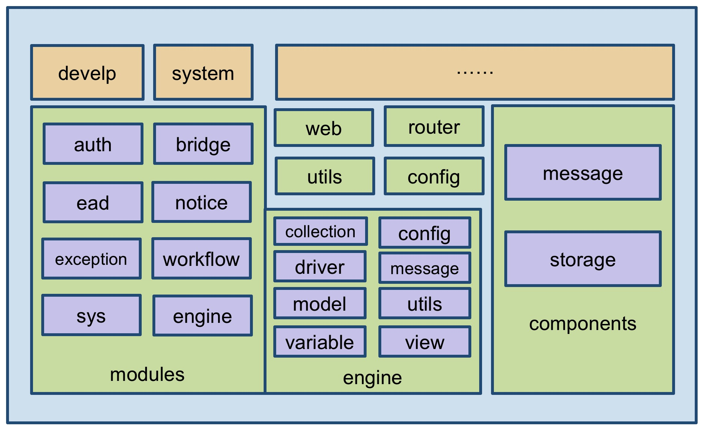

引擎模块架构
引擎模块架构主要由核心模块、组件、web、router、utils、config 以及应用扩展模块组成，组成结构如下图：

组件（components）
message 主要提供消息功能或消息接口功能，包括邮件、短信、客户端通知。邮件只需配置账号和密码，就可以通过 SMTP 协议进行邮件发送；短信需要借助于短信服务，通过配置短信服务参数（当前仅支持LeanCloud，若需要使用其他短信服务平台，则需要扩展接口），进行短信发送。
storage 主要提供存储接口功能，通过统一的存储接口，可以实现与多个平台的存储服务对接（当前仅实现 Mongodb GridFS 存储，若需要使用其他存储服务平台，则需要扩展接口）。
核心模块（modules）
auth 主要提供用户应用权限相关的内容，如 Session、Resource、Role 以及 提供客户端 Cookie 记录功能；
bridge 主要提供内部非高度集成模块间的桥接器模式访问（当前只有工作流桥接器），通过模块之间的桥接，把模块进行解耦，便于以后独立模块的升级；
ead 主要提供核心配置库数据查询功能，当前配置库依赖 Mysql、Mybatis，所以该模块实现了通过 Mybatis 获取在 Mysql 中的核心配置数据库（ead）中的数据能力。
notice 主要提供了通知功能，通过该模块，用户可以针对不同的业务定制消息，此模块依赖于基础组件 message；
exception 主要提供了异常处理的功能；
workflow 主要提供了工作流功能，该模块由 EAD 平台自主实现，没有依赖于任何其他工作流引擎。
sys 主要提供系统管理库数据查询功能。
引擎核心模块（engine）
model 主要提供引擎内的 ORM 功能，通过该模块，实现与数据库的增、删、改等操作；
collection 主要提供引擎内部数据集的处理，通过该模块，实现与从数据库中获取数据；
view 主要提供引擎内容各种视图的处理，通过该模块，组装用户请求的视图对象；
config 主要提供从引擎核心配置库的中获取配置数据的功能，引擎核心模块中所用到的配置数据都使用该模块来获取；
driver 主要提供扩展开发后的驱动的处理，包括视图动作驱动、查询驱动、变量驱动的处理；
message 主要提供视图动作操作后客户端消息生成的功能；
variable 主要提供系统变量处理处理的功能；
utils 是引擎内工具包，把各模块公用的一些功能抽取到该模块下。
路由（Router）
路由模块主要对客户端请求的 API 进行路由导航，包括应用导航、系统功能导航以及 业务功能导航；
- 应用导航（AppControler）：后端引擎与前端引擎的交互入口；
- 系统导航（SysControler）：用户登录、资源获取等功能路由导航
- 业务功能导航（SysControler）：所有业务模块路由导航；
配置（Config）
配置模块主要对系统平台常量，平台默认配置进行处理。
Web 服务入口
平台的启动及其启动参数或数据的加载；
工具集（Utils）
EAD 平台所使用到的工具集；